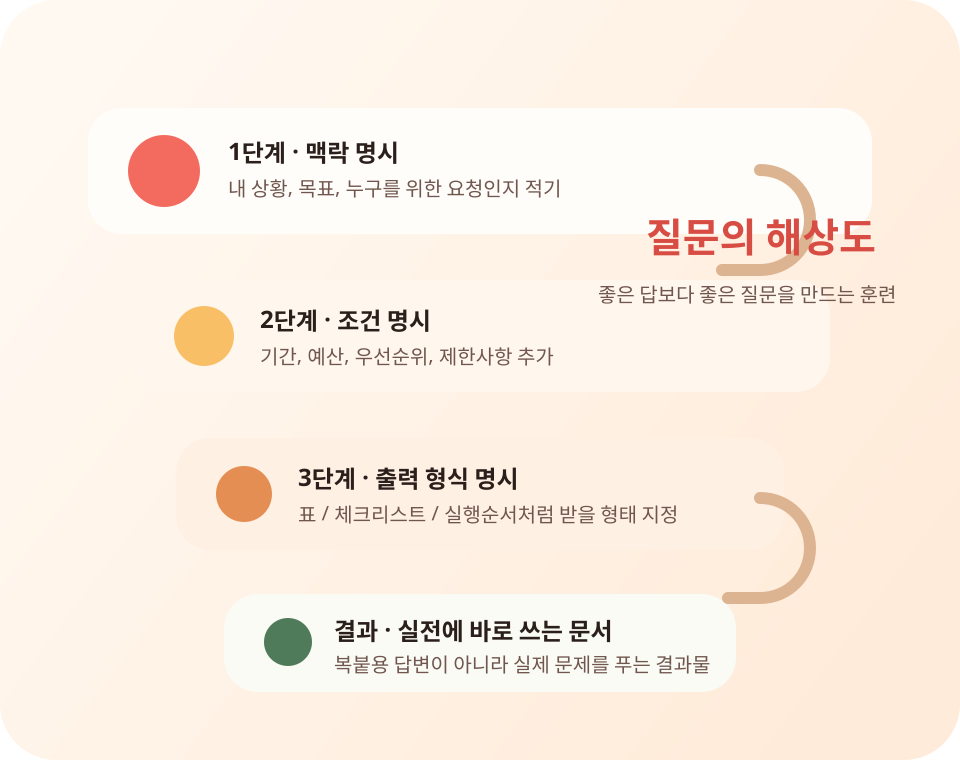

PRACTICAL AI WORKSHOP
내 일 하나를 AI에게 맡기는 2시간 실습
AI를 써보고 끝내지 말고, 오늘 반복되는 일 하나를 실제 결과물로 바꿔 봅니다.
왕초보도 생활 언어로 따라오고, 수업이 끝나면 병원 비교표, 여행 일정표, 업무 안내문처럼 바로 써먹을 결과물이 손에 남습니다.
핵심만 보고 30초 안에 상담 신청까지 이어집니다.
- 2시간 실습 설명 10분 + 따라하기 30분 + 개인 실습 20분 + Q&A 20분
- 결과물 중심 배운 내용이 표, 일정표, 안내문, 요청문으로 바로 남습니다
- 초보 맞춤 에이전트 대신 "AI 비서", 워크플로 대신 "자동으로 해주는 일"

핵심 메시지
AI가 대신 해주되, 내 질문 수준이 결과 품질을 결정한다.컴퓨터를 더 잘해야 하는 시대가 아니라, AI 비서를 시켜서 시간을 버는 시대입니다.
구아바의 AI 공방은 답변을 복붙하는 수업이 아니라, 내 문제를 실제로 해결하는 흐름을 훈련합니다.
AI BOT BUILDER
AI 봇을 직접 만든 사람이 초보자용 수업으로 바꿨습니다
직접 만든 AI 봇 4개로 검증한 실전형 AI 수업입니다. 에르9, 망고빙수, 망고, 망고2를 만들고 운영하며 쌓은 흐름을 생활형 실습으로 바꿔 전달합니다.
에르9
생각은 중앙에서 하고, 실행은 여러 도구와 에이전트가 나눠 처리합니다.
망고빙수
요청을 받아 팀을 나누고, 중간 확인 없이 결과를 정리해 보고합니다.
망고 · Openclaw Agent
접수, 실행, 검토, 축적의 흐름으로 결과와 기억을 함께 남깁니다.
망고2
한 번 말하면 내부에서 질문 정렬, 라우팅, 실행, 자산화로 처리합니다.
WHAT YOU LEAVE WITH
수업 끝나면 이런 결과물이 손에 남습니다
평범한 표 하나로 끝내지 않습니다. 내 말을 AI가 다시 쓸 수 있는 작전판, 리포트, 업무 데스크, 질문 템플릿으로 바꾸는 경험을 남깁니다.
가족 작전실 리포트
Before 여행 일정 짜줘
After 적게 걷고, 해산물은 피하고, 택시 2회까지 반영
- 오전: 역 근처 체크인 전 가벼운 코스
- 점심: 해산물 제외 식당 후보 2곳
- 공유문: 엄마, 이 일정이면 많이 안 걸어도 돼요.
가족 회의용 병원 선택 리포트
Before 검진 어디서 하지?
After 거리, 비용, 후기, 예약 난이도를 한 장으로 정리
- 결론: 이동이 편한 A병원 우선
- 주의: 검사 항목이 다른 병원은 별도 확인
- 공유문: 제가 보기엔 A병원이 가장 무난해 보여요.
AI 비서 업무 데스크
Before 직원 안내문 써줘
After 공지문, 체크리스트, 카톡 안내 초안을 한 번에 생성
- 오늘 보낼 문장: 신규 안내 공지 초안
- 확인 질문: 대상, 날짜, 준비물
- 다음 행동: 복사해서 단체방에 붙여넣기
망고2 질문 템플릿팩
Before AI한테 뭐라고 물어보지?
After 생활, 가족, 업무용 질문문을 다시 쓰는 세트로 저장
정리해줘
비교해줘
보낼 말로 바꿔줘
CORE PHILOSOPHY
공방이 가르치는 세 가지
질문의 해상도
좋은 답을 받는 법보다, 좋은 질문을 만드는 법을 먼저 익힙니다. 맥락, 조건, 출력 형식을 분명히 적는 연습이 핵심입니다.
답변형 AI에서 실행형 AI로
설명만 듣고 끝나지 않습니다. 한 줄 요청이 문서가 되고, 체크리스트가 되고, 실제 할 일로 이어지는 구조를 보여줍니다.
생활밀착 실습
병원 정보 비교표, 여행 일정 정리, 교육 정보 요약처럼 수강생의 현실 문제를 바로 해결하는 과제로 연습합니다.
QUESTION RESOLUTION
질문의 해상도를 높이면 결과가 달라집니다
구아바의 AI 공방은 초보 수강생에게 3단계 질문 프레임을 제공합니다. 같은 요청도 어떻게 묻느냐에 따라 결과의 품질이 달라지는 경험을 직접 하게 됩니다.

생활 예시
저해상도 질문
"여행 일정 짜줘"
고해상도 질문
"부모님과 1박 2일로 부산에 가요. 걷는 시간이 적고, 식사는 해산물 위주가 아니었으면 좋겠어요. 표로 일정 짜 주세요."
결과 미리보기
이동 시간을 줄인 일정표 오전·점심·오후 동선과 식사 후보를 표로 정리업무 예시
저해상도 질문
"신규 직원 교육 자료 만들어줘"
고해상도 질문
"신규 상담 직원용 교육자료가 필요해요. 교육 시간은 30분, 목표는 첫 통화 품질 통일입니다. 체크리스트 형식으로 정리해 주세요."
결과 미리보기
첫 통화 체크리스트 인사말, 확인 질문, 마무리 멘트를 한 장으로 정리가족 예시
저해상도 질문
"손주 교육 정보 정리해줘"
고해상도 질문
"초등학생 손주를 위한 AI 체험 프로그램을 찾고 있어요. 서울권, 주말 가능, 비용은 10만원 이하로 표로 비교해 주세요."
결과 미리보기
주말 AI 체험 비교표 장소, 시간, 비용, 추천 이유를 가족 공유용으로 정리CURRICULUM FLOW
왕초보도 따라오는 4단계 실습 커리큘럼
왜 AI인가
"오픈클로가 뭐냐"보다 "내 삶에서 무엇이 편해지느냐"를 먼저 보여줍니다. 결과 화면을 먼저 보고 흥미를 붙입니다.
질문의 해상도
맥락, 조건, 출력 형식을 묻는 법을 익힙니다. 같은 주제를 낮은 해상도 질문과 높은 해상도 질문으로 비교해 차이를 체감합니다.
실행형 AI 경험
답변을 읽는 데서 끝나지 않고, 비교표, 일정표, 요약문 같은 파일형 결과물을 받는 흐름을 직접 실습합니다.
90일 실사용 루프
관심만 높은 상태에서 벗어나기 위해 30일, 60일, 90일 과제로 연결하고 실패를 복구하는 루틴까지 함께 익힙니다.
PRACTICE MISSIONS
실습은 현실 문제로 시작합니다
시험형 교육 대신 실전형 교육이 실사용률을 더 빠르게 끌어올린다는 가설을 바탕으로, 바로 생활에 붙는 미션을 설계했습니다.
병원·검진 정보 비교표
복잡한 의료 정보를 표로 정리하고, 중요한 조건만 남기는 법을 배웁니다.
- 검색 시간 감소
- 정리 피로 감소
- 조건 비교 훈련
1박 2일 여행 일정 자동 정리
이동 시간, 예산, 동행자 조건을 넣어 실행 가능한 일정표를 만듭니다.
- 맥락 명시 훈련
- 출력 형식 지정
- 실패한 요청 수정법
자녀·손주 교육 정보 요약
흩어진 정보를 비교표와 체크리스트로 묶어 가족 의사결정을 돕습니다.
- 생활밀착형 문제 해결
- 가족 공유 문서 제작
- 반복 활용 가능한 템플릿
FOR WHOM
이런 분은 바로 신청해도 좋습니다
AI를 켜도 뭘 물어볼지 막히는 분
전문 용어 없이 생활 언어로 시작하고, 결과 화면을 보며 따라옵니다.
가족과 생활 정보를 정리해야 하는 분
병원, 여행, 교육 정보처럼 바로 필요한 주제를 표와 일정표로 만듭니다.
반복 안내문을 줄이고 싶은 분
문서 초안, 체크리스트, 공지문처럼 자주 쓰는 업무 문장을 빠르게 정리합니다.
CLASS FORMAT
수업은 이렇게 진행됩니다
이해보다 전환, 설명보다 실습을 목표로 구성했습니다. 보고, 따라 하고, 내 문제에 적용하고, 막히면 복구하는 흐름을 한 번에 경험합니다.
결과를 먼저 보여주는 오프닝
"AI가 뭔가요?"보다 "그래서 내 삶이 어떻게 편해지나요?"를 먼저 보여줘서 진입장벽을 낮춥니다.
같이 따라 하는 실습
병원 정보 비교표, 여행 일정표, 교육 정보 정리처럼 바로 쓰는 과제를 같이 완성합니다.
내 상황에 맞춘 적용
똑같이 따라 하는 단계에서 멈추지 않고, 각자 생활과 업무 문제에 맞춰 질문을 다시 설계합니다.
실패와 복구 루틴
AI가 이상한 답을 내도 끝나지 않습니다. 요청을 어떻게 수정하고, 다음 시도를 어떻게 설계하는지까지 함께 연습합니다.
“AI의 미래는 더 똑똑한 답변이 아니라, 실제 도구와 워크플로 안으로 들어가는 실행형 시스템입니다.”
구아바의 AI 공방은 설명형 수업보다 결과가 남는 수업, 복붙보다 흐름을 만드는 수업을 지향합니다.
READY TO START
30초만 적으면 수업 상담으로 이어집니다
어떤 수업이 맞을지 간단히 적어 주세요. 확인 후 수업 방식과 준비물을 안내드립니다.
신청 접수
신청서를 보내면 수업 상담으로 이어집니다
이름과 연락처, 내 상황을 적어 주세요. 작성한 내용은 ninefire@naver.com으로 접수됩니다.
30초 정도면 작성할 수 있습니다.
이런 문의에 적합
- 왕초보 대상 AI 입문 강의
- 중장년층 생활형 AI 실습 클래스
- 소규모 스터디·워크숍 랜딩페이지 소개
문의 전에 정하면 좋은 것
- 누가 듣는지: 초보 / 중장년 / 실무자
- 무엇이 필요한지: 생활 / 업무 / 가족 교육
- 어디까지 원하는지: 체험 / 1회 특강 / 실습 중심 과정
FAQ
처음 배우는 분들이 자주 묻는 질문
컴퓨터를 잘 못해도 괜찮나요?
괜찮습니다. 공방은 기술 설명보다 결과 화면을 먼저 보여주고, 용어를 생활 언어로 바꿔 설명합니다.
챗GPT 수업과 뭐가 다른가요?
답변을 받는 데서 끝나지 않고, 비교표·일정표·요약문처럼 실제로 쓰는 결과물을 만드는 흐름까지 다룹니다.
배운 뒤에도 계속 쓸 수 있나요?
네. 30·60·90일 실사용 루프로 연결해서 한 번의 체험이 아니라 생활 속 습관으로 이어지도록 설계했습니다.